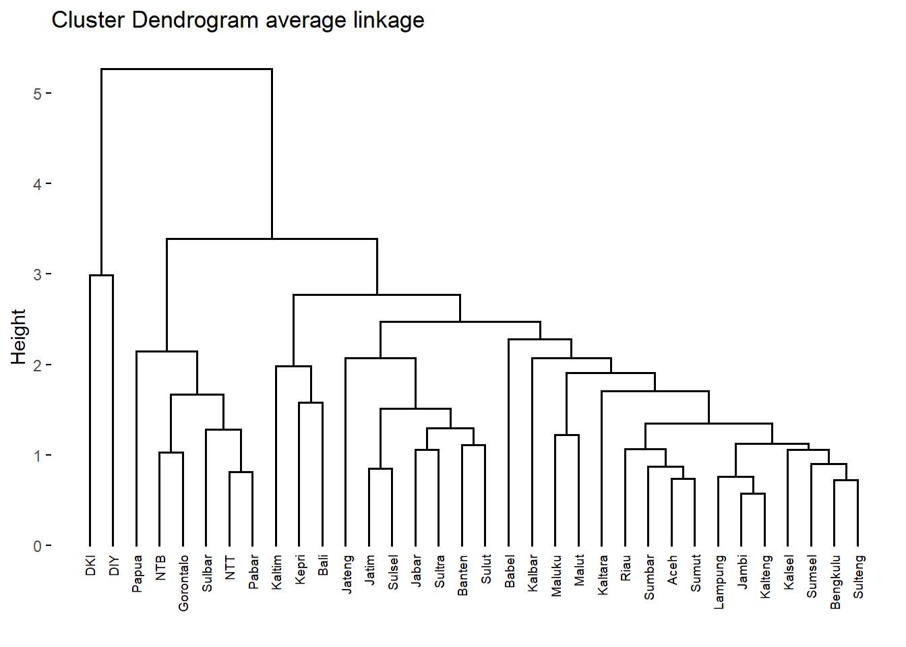
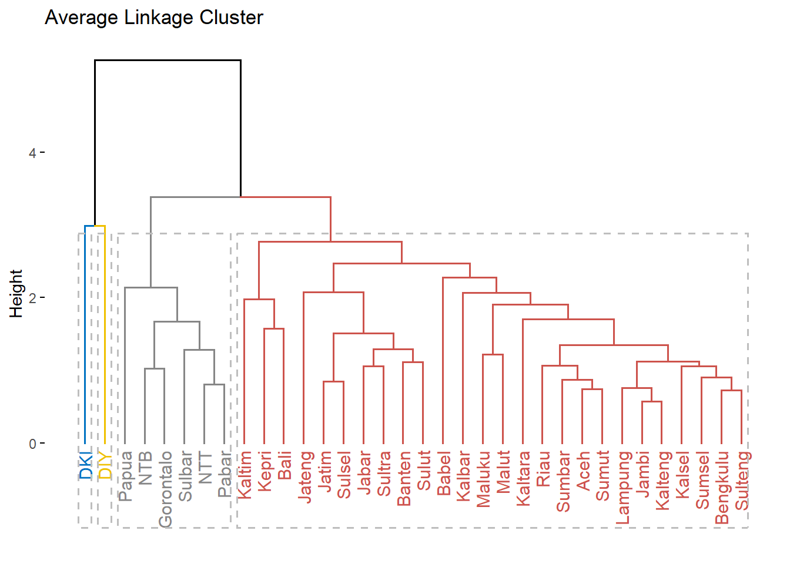

5 Cluster Analysis
5.1 Metode berhirarki
Ref: https://rpubs.com/odenipinedo/cluster-analysis-in-R
library(readxl)
#> Warning: package 'readxl' was built under R version 4.2.3
Provinsi <- read_excel("Data/provinsi.xlsx")
Prov.scaled = scale(Provinsi[,c(4:8)])
rownames(Prov.scaled) = Provinsi$Provinsi
head(Prov.scaled)
#> IPM UHH RLS PPK
#> Aceh 0.20822137 0.04044611 0.7444782 -0.62264434
#> Sumut 0.20085709 -0.39282591 1.0245728 -0.11277090
#> Sumbar 0.36532598 -0.23835502 0.4747574 0.01481560
#> Riau 0.50033775 0.59428078 0.5162529 0.19012890
#> Jambi 0.05848104 0.50762638 -0.1165536 -0.18648754
#> Sumsel -0.21890679 -0.08765171 -0.2825356 -0.02582306
#> Gini
#> Aceh -0.8089350
#> Sumut -0.6516207
#> Sumbar -1.2546590
#> Riau -0.9138112
#> Jambi -0.6778397
#> Sumsel 0.1349510
## membuat dissimilarity matrix
dprov = dist(Prov.scaled, method="euclidean")
c.comp = hclust(dprov, method = "complete")
cor(dprov , cophenetic(c.comp))
#> [1] 0.7853523
c.sing = hclust(dprov, method = "single")
cor(dprov , cophenetic(c.sing))
#> [1] 0.7905858
c.avrg = hclust(dprov, method = "average")
cor(dprov , cophenetic(c.avrg))
#> [1] 0.8092689
c.ward = hclust(dprov, method = "ward.D")
cor(dprov , cophenetic(c.ward))
#> [1] 0.5336018
c.ctrd = hclust(dprov, method = "centroid")
cor(dprov , cophenetic(c.ctrd))
#> [1] 0.7700878
library(factoextra)
#> Loading required package: ggplot2
#> Warning: package 'ggplot2' was built under R version 4.2.3
#> Welcome! Want to learn more? See two factoextra-related books at https://goo.gl/ve3WBa
fviz_dend(c.avrg, cex = 0.5,
main = "Cluster Dendrogram average linkage")
#> Warning: The `<scale>` argument of `guides()` cannot be `FALSE`. Use
#> "none" instead as of ggplot2 3.3.4.
#> ℹ The deprecated feature was likely used in the factoextra
#> package.
#> Please report the issue at
#> <https://github.com/kassambara/factoextra/issues>.
#> This warning is displayed once every 8 hours.
#> Call `lifecycle::last_lifecycle_warnings()` to see where
#> this warning was generated.
avg_coph <- cophenetic(c.avrg)
avg_clust <- cutree(c.avrg, k = 4)
table(avg_clust)
#> avg_clust
#> 1 2 3 4
#> 26 1 1 6
fviz_dend(c.avrg, k = 4,
k_colors = "jco",
rect = T,
main = "Average Linkage Cluster")
library(clValid)
#> Warning: package 'clValid' was built under R version 4.2.3
#> Loading required package: cluster
#> Warning: package 'cluster' was built under R version 4.2.3
library(cluster)
# internal measures
internal <- clValid(Prov.scaled, nClust = 2:6,
clMethods = "hierarchical",
validation = "internal",
metric = "euclidean",
method = "average")
summary(internal)
#>
#> Clustering Methods:
#> hierarchical
#>
#> Cluster sizes:
#> 2 3 4 5 6
#>
#> Validation Measures:
#> 2 3 4 5 6
#>
#> hierarchical Connectivity 4.5246 10.3012 11.6345 18.3198 24.1508
#> Dunn 0.3637 0.3703 0.3703 0.3224 0.3592
#> Silhouette 0.4915 0.3484 0.3092 0.2567 0.3117
#>
#> Optimal Scores:
#>
#> Score Method Clusters
#> Connectivity 4.5246 hierarchical 2
#> Dunn 0.3703 hierarchical 3
#> Silhouette 0.4915 hierarchical 2
fviz_dend(c.avrg, k = 2,
k_colors = "jco",
rect = T,
main = "Average Linkage Cluster")
group = cutree(c.avrg, k = 2)
group
#> Aceh Sumut Sumbar Riau Jambi Sumsel
#> 1 1 1 1 1 1
#> Bengkulu Lampung Babel Kepri DKI Jabar
#> 1 1 1 1 2 1
#> Jateng DIY Jatim Banten Bali NTB
#> 1 2 1 1 1 1
#> NTT Kalbar Kalteng Kalsel Kaltim Kaltara
#> 1 1 1 1 1 1
#> Sulut Sulteng Sulsel Sultra Gorontalo Sulbar
#> 1 1 1 1 1 1
#> Maluku Malut Pabar Papua
#> 1 1 1 1
fviz_cluster(list(data = Prov.scaled,
cluster = group)) +
theme_minimal()
prcomp(Prov.scaled)
#> Standard deviations (1, .., p=5):
#> [1] 1.7653705 1.0227284 0.7270850 0.5299864 0.1671984
#>
#> Rotation (n x k) = (5 x 5):
#> PC1 PC2 PC3 PC4
#> IPM -0.5601680 -0.05311199 -0.005227509 -0.0006949187
#> UHH -0.4513030 0.05646383 -0.811065327 0.2024129889
#> RLS -0.4591728 -0.33781331 0.497619343 0.5648220282
#> PPK -0.5069166 0.09086739 0.227624805 -0.7546468667
#> Gini -0.1213811 0.93360390 0.206658283 0.2655422416
#> PC5
#> IPM -0.82665781
#> UHH 0.30714735
#> RLS 0.32923179
#> PPK 0.33685862
#> Gini 0.020738195.2 Metode tidak berhirarki - kmeans
fviz_nbclust(Prov.scaled, kmeans, method = "wss")
fviz_nbclust(Prov.scaled, kmeans, method = "silhouette")
set.seed(1)
km = kmeans(Prov.scaled, centers=4)
km
#> K-means clustering with 4 clusters of sizes 5, 7, 16, 6
#>
#> Cluster means:
#> IPM UHH RLS PPK Gini
#> 1 1.67223995 1.1202353 1.3689855 1.75840321 0.6331131
#> 2 0.22785944 0.6620973 -0.1491572 0.09292014 0.9739608
#> 3 -0.08819085 -0.1001318 0.1246391 -0.24567350 -0.7991029
#> 4 -1.42419372 -1.4389581 -1.2991755 -0.91861351 0.4670591
#>
#> Clustering vector:
#> Aceh Sumut Sumbar Riau Jambi Sumsel
#> 3 3 3 3 3 3
#> Bengkulu Lampung Babel Kepri DKI Jabar
#> 3 3 3 1 1 2
#> Jateng DIY Jatim Banten Bali NTB
#> 2 1 2 2 1 4
#> NTT Kalbar Kalteng Kalsel Kaltim Kaltara
#> 4 3 3 3 1 3
#> Sulut Sulteng Sulsel Sultra Gorontalo Sulbar
#> 2 3 2 2 4 4
#> Maluku Malut Pabar Papua
#> 3 3 4 4
#>
#> Within cluster sum of squares by cluster:
#> [1] 17.054859 7.933134 22.111511 7.711994
#> (between_SS / total_SS = 66.8 %)
#>
#> Available components:
#>
#> [1] "cluster" "centers" "totss"
#> [4] "withinss" "tot.withinss" "betweenss"
#> [7] "size" "iter" "ifault"
fviz_cluster(list(data = Prov.scaled, cluster = km$cluster)) + theme_minimal()